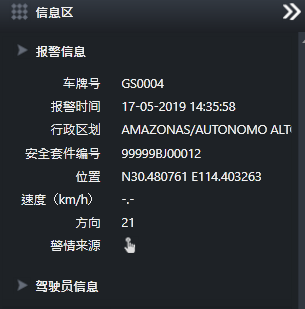
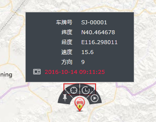

查看报警信息
可查看车辆的报警信息。
通过信息区查看所选车辆的报警相关信息。
在车辆报警主界面的警情列表中选择警情，系统在信息区窗口显示待查看车辆的报警信息。
报警信息区显示报警相关信息，包括：车牌号、报警时间、行政区划、安全套件编号、报警时位置、速度、方向、警情来源、驾驶员信息等。

Fig 39 报警信息窗口
在GIS地图上查看车辆最近信息，包括报警车辆报警后最近位置及行驶速度等信息。
| 1. | 在车辆报警主界面的警情列表中选择报警车辆，系统会在GIS地图上居中显示被选择车辆位置。 |
| 2. | 鼠标滑过车辆在GIS地图上的图标，图标上方自动显示该车辆的操作按钮，并以冒泡方式显示车辆的详细信息。 |
| 3. | 单击操作按钮最左侧的〖 车辆详细信息窗口显示车辆最近时间的详细信息，包括：车牌号、经度、纬度、速度、方向、定位时间等。

Fig 40 报警车辆最近信息 |